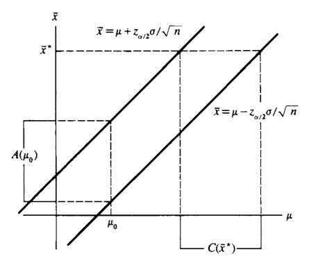
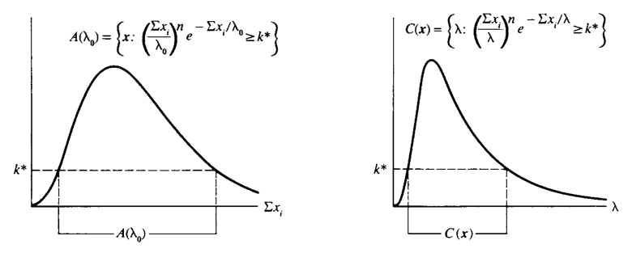
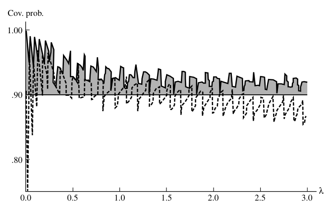
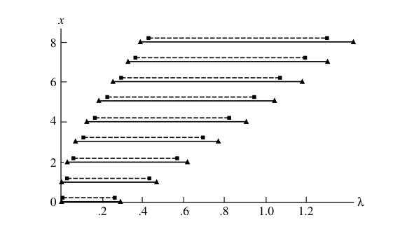
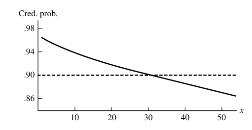
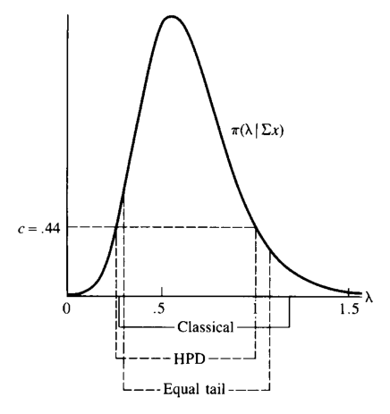

9 구간추정
“I fear,” said Holmes, “that if the matter is beyond humanity it is certainly beyond me. Yet we must exhaust all natural explanations before we fall back upon such a theory as this.”
— Sherlock Holmes, The Adventure of the Devil’s Foot
- 7장에서는 모수 \(\theta\)를 하나의 값으로 추정하는 점추정(point estimation)을 다루었다.
- 이 장에서는 모수 \(\theta\)가 어떤 집합 \(C(X)\) 안에 있다고 말하는 집합추정(set estimation), 특히 실수값 모수에 대한 구간추정(interval estimation)을 다룬다.
- 구간추정은 점추정보다 덜 정밀해 보이지만, 대신 “참값을 포함할 확률”에 대한 보장을 제공한다.
- 이 장의 핵심 질문은 두 가지이다.
- 어떻게 신뢰구간 또는 신뢰집합을 만들 것인가?
- 만들어진 구간을 어떤 기준으로 평가할 것인가?
9.1 도입
9.1.1 구간추정량의 정의
- 실수값 모수 \(\theta\)에 대한 구간추정은 표본 \(X=(X_1,\ldots,X_n)\)의 두 함수 \(L(X)\)와 \(U(X)\)로 구성된다.
- 모든 표본값 \(x\)에 대해 \(L(x)\le U(x)\)라고 하자.
- 표본 \(X=x\)가 관측되면 다음 추론을 한다.
\[ L(x)\le \theta \le U(x) \]
9.1.1.1 정의
- \([L(X),U(X)]\)를 \(\theta\)에 대한 구간추정량(interval estimator)이라고 한다.
- 실제 관측 후 얻는 값 \([L(x),U(x)]\)를 구간추정값(interval estimate)이라고 한다.
- 한쪽만 유한한 구간도 허용한다.
- \((-\infty,U(x)]\): 상한 신뢰구간
- \([L(x),\infty)\): 하한 신뢰구간
- 상황에 따라 열린구간이나 반열린구간도 사용할 수 있지만, 기본 표기는 닫힌구간을 사용한다.
9.1.2 예제: 정규표본의 단순 구간추정량
- \(X_1,X_2,X_3,X_4\)가 \(N(\mu,1)\)에서 온 표본이라고 하자.
- \(\mu\)에 대한 한 구간추정량은 다음과 같다.
\[ [\bar X-1,\bar X+1]. \]
- 이 구간은 표본평균 주변 폭 1의 구간으로 \(\mu\)를 추정한다.
9.1.3 예제: 점추정과 구간추정의 차이
- 점추정량 \(\bar X\)로 \(\mu\)를 맞힐 확률은 연속분포에서 보통 0이다.
\[ P(\bar X=\mu)=0. \]
- 반면 구간추정량은 양의 확률로 \(\mu\)를 포함할 수 있다.
- 위 예에서 \(n=4\)이고 \(\bar X\sim N(\mu,1/4)\)이므로
\[ \begin{aligned} P(\mu\in[\bar X-1,\bar X+1]) &=P(\bar X-1\le \mu\le \bar X+1)\\ &=P(-1\le \bar X-\mu\le 1)\\ &=P\left(-2\le \frac{\bar X-\mu}{1/2}\le 2\right)\\ &=P(-2\le Z\le 2)\\ &=0.9544. \end{aligned} \]
- 해석:
- 점추정은 하나의 값을 준다.
- 구간추정은 정밀도는 줄지만 참값을 포함할 확률 보장을 제공한다.
9.1.4 포함확률과 신뢰계수
9.1.4.1 정의: 포함확률
- 구간추정량 \([L(X),U(X)]\)가 참 모수 \(\theta\)를 포함할 확률을 포함확률(coverage probability)이라고 한다.
\[ P_\theta\{\theta\in[L(X),U(X)]\} \]
또는
\[ P(\theta\in[L(X),U(X)]\mid\theta) \]
로 쓴다.
9.1.4.2 정의: 신뢰계수
- 구간추정량의 신뢰계수(confidence coefficient)는 포함확률의 하한이다.
\[ \inf_\theta P_\theta\{\theta\in[L(X),U(X)]\}. \]
- 포함확률이 \(\theta\)에 따라 달라지는 경우, 참 \(\theta\)를 모르기 때문에 보장할 수 있는 값은 하한인 신뢰계수이다.
- 포함확률이 \(\theta\)와 무관한 경우에는 포함확률과 신뢰계수가 같다.
9.1.5 “모수가 확률적으로 움직인다”는 해석의 주의
- 고전적 신뢰구간에서는 \(\theta\)가 랜덤이 아니다.
- 랜덤인 것은 구간 \([L(X),U(X)]\)이다.
- 따라서
\[ P_\theta\{\theta\in[L(X),U(X)]\} \]
는 \(\theta\)에 대한 확률이 아니라, 표본 \(X\)의 반복추출에 대한 확률이다. - 관측 후 얻어진 특정 구간 \([L(x),U(x)]\)은 이미 고정되어 있다. - 그 특정 구간이 \(\theta\)를 포함하는지는 참이거나 거짓이다.
9.1.6 예제: 균등분포 척도모수의 구간추정량
- \(X_1,\ldots,X_n\)이 \(Uniform(0,\theta)\)에서 온 표본이고
\[ Y=\max\{X_1,\ldots,X_n\} \]
라고 하자. - 두 후보 구간을 비교한다.
\[ [aY,bY],\qquad 1\le a<b, \]
\[ [Y+c,Y+d],\qquad 0\le c<d. \]
9.1.6.1 배율형 구간 \([aY,bY]\)
- \(T=Y/\theta\)라고 하면 \(T\)의 pdf는
\[ f_T(t)=nt^{n-1},\qquad 0\le t\le1. \]
- 포함확률은
\[ \begin{aligned} P_\theta(\theta\in[aY,bY]) &=P_\theta(aY\le \theta\le bY)\\ &=P_\theta\left(\frac1b\le \frac{Y}{\theta}\le \frac1a\right)\\ &=\int_{1/b}^{1/a}nt^{n-1}\,dt\\ &=\left(\frac1a\right)^n-\left(\frac1b\right)^n. \end{aligned} \]
- 이 포함확률은 \(\theta\)와 무관하다.
- 따라서 신뢰계수도 같은 값이다.
9.1.6.2 평행이동형 구간 \([Y+c,Y+d]\)
- \(\theta\ge d\)에서 포함확률은
\[ \begin{aligned} P_\theta(\theta\in[Y+c,Y+d]) &=P_\theta(Y+c\le \theta\le Y+d)\\ &=P_\theta\left(1-\frac d\theta\le \frac{Y}{\theta}\le 1-\frac c\theta\right)\\ &=\left(1-\frac c\theta\right)^n-\left(1-\frac d\theta\right)^n. \end{aligned} \]
- 이 값은 \(\theta\)에 의존한다.
- 특히
\[ \lim_{\theta\to\infty}\left[\left(1-\frac c\theta\right)^n-\left(1-\frac d\theta\right)^n\right]=0. \]
- 따라서 이 구간의 신뢰계수는 0이다.
- 교훈:
- 같은 길이처럼 보이는 구간이라도 모수 구조와 맞지 않으면 신뢰계수가 나쁠 수 있다.
- 척도모수에는 비율형 구간이 자연스럽다.
9.2 구간추정량을 찾는 방법
- 이 절에서는 구간추정량을 만드는 여러 방법을 다룬다.
- 겉으로는 서로 다른 방법처럼 보이지만, 대부분은 결국 검정통계량 또는 피벗을 뒤집는 방식으로 이해할 수 있다.
- 마지막의 베이지안 구간만은 posterior distribution을 기준으로 구성된다는 점에서 해석이 다르다.
9.3 검정통계량의 역변환
9.3.1 검정과 신뢰구간의 대응
- 가설검정과 구간추정 사이에는 강한 대응관계가 있다.
- 각 \(\theta_0\)에 대해 \(H_0:\theta=\theta_0\)를 검정하는 수준 \(\alpha\) 검정의 채택역 \(A(\theta_0)\)이 있다고 하자.
- 표본 \(x\)가 관측되었을 때, 그 표본을 채택할 수 있게 만드는 \(\theta_0\)들의 집합을 만들면 신뢰집합이 된다.
9.3.2 예제: 정규검정의 역변환
- \(X_1,\ldots,X_n\)이 iid \(N(\mu,\sigma^2)\)이고 \(\sigma\)를 안다고 하자.
- \(H_0:\mu=\mu_0\) 대 \(H_1:\mu\ne\mu_0\)를 수준 \(\alpha\)에서 검정한다.
- 합리적인 양측 검정의 기각역은
\[ \left\{x: |\bar x-\mu_0|>z_{\alpha/2}\frac{\sigma}{\sqrt n}\right\}. \]
- 따라서 채택역은
\[ |\bar x-\mu_0|\le z_{\alpha/2}\frac{\sigma}{\sqrt n}. \]
- 이를 \(\mu_0\)에 대해 풀면
\[ \bar x-z_{\alpha/2}\frac{\sigma}{\sqrt n} \le \mu_0\le \bar x+z_{\alpha/2}\frac{\sigma}{\sqrt n}. \]
- 따라서 \(1-\alpha\) 신뢰구간은
\[ \left[\bar X-z_{\alpha/2}\frac{\sigma}{\sqrt n},\; \bar X+z_{\alpha/2}\frac{\sigma}{\sqrt n}\right]. \]

- 그림의 핵심:
- 검정은 \(\mu_0\)를 고정하고 가능한 \(\bar x\)를 본다.
- 신뢰구간은 관측된 \(\bar x\)를 고정하고 가능한 \(\mu\)를 본다.
- 둘은 같은 부등식을 서로 다른 방향에서 읽는 것이다.
9.3.3 정리: 검정과 신뢰집합의 일반 대응
- 각 \(\theta_0\in\Theta\)에 대해 \(H_0:\theta=\theta_0\)를 검정하는 수준 \(\alpha\) 검정의 채택역을 \(A(\theta_0)\)라고 하자.
- 각 표본값 \(x\)에 대해
\[ C(x)=\{\theta_0:x\in A(\theta_0)\} \tag{9.2.1} \]
라고 정의하면 \(C(X)\)는 \(1-\alpha\) 신뢰집합이다.
- 반대로 \(C(X)\)가 \(1-\alpha\) 신뢰집합이면
\[ A(\theta_0)=\{x:\theta_0\in C(x)\} \]
는 \(H_0:\theta=\theta_0\)에 대한 수준 \(\alpha\) 검정의 채택역이다.
- 증명 아이디어:
- 수준 \(\alpha\) 검정이므로
\[ P_{\theta_0}(X\in A(\theta_0))\ge 1-\alpha. \]
- \(\theta_0\in C(X)\)와 \(X\in A(\theta_0)\)가 동치이므로
\[ P_\theta(\theta\in C(X))=P_\theta(X\in A(\theta))\ge1-\alpha. \]
9.3.4 예제: LRT를 뒤집은 지수분포 평균의 신뢰구간
- \(X_1,\ldots,X_n\)이 exponential\((\lambda)\)에서 온 표본이라고 하자.
- \(\lambda\)에 대한 신뢰구간을 \(H_0:\lambda=\lambda_0\) 대 \(H_1:\lambda\ne\lambda_0\)의 LRT를 뒤집어 얻는다.
- 가능도는
\[ L(\lambda\mid x)=\frac1{\lambda^n}e^{-\sum x_i/\lambda}. \]
- LRT 통계량은 상수항을 흡수하면 다음 형태의 채택역을 만든다.
\[ A(\lambda_0)= \left\{x: \left(\frac{\sum x_i}{\lambda_0}\right)^n e^{-\sum x_i/\lambda_0} \ge k^* \right\}. \tag{9.2.2} \]
- 이를 \(\lambda\)에 대해 뒤집으면
\[ C(x)= \left\{\lambda: \left(\frac{\sum x_i}{\lambda}\right)^n e^{-\sum x_i/\lambda} \ge k^* \right\}. \]

- 이 구간은 충분통계량 \(\sum X_i\)에만 의존한다.
- \(n=2\)인 경우 \(\sum X_i/\lambda\sim Gamma(2,1)\)을 이용해 구간을 수치적으로 구할 수 있다.
- 예를 들어 90% 신뢰구간은 상수 \(a=5.480\), \(b=0.441\)을 사용하여
\[ P_\lambda\left(\frac1{5.480}\sum X_i\le\lambda\le \frac1{0.441}\sum X_i\right)\approx0.90006 \]
이 되게 만들 수 있다.
9.3.5 LRT 역변환의 일반 형태
- \(H_0:\theta=\theta_0\) 대 \(H_1:\theta\ne\theta_0\)의 LRT를 뒤집으면 보통 다음 꼴의 영역이 나온다.
\[ \{\theta:L(\theta\mid x)\ge k'(x,\theta)\}. \tag{9.2.7} \]
- 어떤 경우에는 \(k'\)가 \(\theta\)에 의존하지 않아, “가능도가 높은 \(\theta\)들의 집합”이라는 직관적 해석이 가능하다.
9.3.6 예제: 정규분포의 한쪽 신뢰상한
- \(X_1,\ldots,X_n\)이 \(N(\mu,\sigma^2)\)에서 온 표본이라고 하자.
- \(\mu\)에 대한 \(1-\alpha\) 상한 신뢰구간을 구한다.
- 목표 구간은
\[ (-\infty,U(X)] \]
이다. - 이를 위해 \(H_0:\mu=\mu_0\) 대 \(H_1:\mu<\mu_0\)의 한쪽 검정을 뒤집는다. - LRT는 다음 조건에서 \(H_0\)를 기각한다.
\[ \frac{\bar X-\mu_0}{S/\sqrt n}< -t_{n-1,\alpha}. \]
- 채택역을 \(\mu_0\)에 대해 풀면
\[ \mu_0\le \bar x+t_{n-1,\alpha}\frac{s}{\sqrt n}. \]
- 따라서
\[ C(X)=\left(-\infty,\bar X+t_{n-1,\alpha}\frac{S}{\sqrt n}\right] \]
은 \(1-\alpha\) 상한 신뢰구간이다.
9.3.7 예제: 이항 성공확률의 한쪽 신뢰하한
- \(X_1,\ldots,X_n\)이 Bernoulli\((p)\) 시행이고
\[ T=\sum_{i=1}^{n}X_i\sim Binomial(n,p) \]
라고 하자. - \(p\)에 대한 하한 신뢰구간 \((L(X),1]\)을 만들고 싶다. - 이를 위해 \(H_0:p=p_0\) 대 \(H_1:p>p_0\)의 한쪽 검정을 뒤집는다. - 이항분포는 단조가능도비 성질을 가지므로, Karlin-Rubin 정리에 의해 \(T\)가 큰 값일 때 기각하는 검정이 UMP이다. - \(k(p_0)\)는 다음을 만족하는 정수로 정한다.
\[ \sum_{y=0}^{k(p_0)}\binom ny p_0^y(1-p_0)^{n-y}\ge1-\alpha, \tag{9.2.8} \]
\[ \sum_{y=0}^{k(p_0)-1}\binom ny p_0^y(1-p_0)^{n-y}<1-\alpha. \]
- 이 구조를 뒤집으면 Clopper-Pearson류의 정확한 이항 신뢰한계를 얻는다.
- 이산분포에서는 정확히 \(\alpha\)를 맞추기 어렵기 때문에 보수적인 구간이 생긴다.
9.4 피벗량
9.4.1 피벗량의 정의
9.4.1.1 정의
\(Q(X,\theta)=Q(X_1,\ldots,X_n,\theta)\)의 분포가 모든 모수값에서 같으면 \(Q\)를 피벗량(pivotal quantity) 또는 pivot이라고 한다.
즉 \(X\sim F(x\mid\theta)\)일 때, \(Q(X,\theta)\)의 분포가 \(\theta\)에 의존하지 않아야 한다.
피벗량은 보통 표본과 모수를 모두 포함한다.
그러나 그 분포는 알려져 있고 모수에 의존하지 않는다.
따라서 피벗량을 사용하면 포함확률이 모수에 의존하지 않는 신뢰구간을 만들 수 있다.
9.4.2 위치-척도 피벗
- 위치모수 문제에서는 차이가 피벗이 되는 경우가 많다.
- 척도모수 문제에서는 비율이 피벗이 되는 경우가 많다.
- 정규표본에서
\[ \frac{\bar X-\mu}{S/\sqrt n} \]
는 \(t_{n-1}\) 분포를 따르므로 피벗량이다.
9.4.3 예제: 감마 피벗
- \(X_1,\ldots,X_n\)이 iid exponential\((\lambda)\)라고 하자.
- \(T=\sum X_i\)이면
\[ T\sim Gamma(n,\lambda). \]
- 감마분포에서 \(T\)와 \(\lambda\)는 \(T/\lambda\) 꼴로 나타난다.
- 따라서
\[ Q(T,\lambda)=\frac{2T}{\lambda} \]
는
\[ Q(T,\lambda)\sim Gamma(n,2)=\chi^2_{2n} \]
를 따른다. - 분포가 \(\lambda\)에 의존하지 않으므로 \(2T/\lambda\)는 피벗량이다.
9.4.4 피벗량으로 신뢰구간 만들기
- \(Q(X,\theta)\)가 피벗량이라고 하자.
- \(a,b\)를 다음을 만족하도록 정한다.
\[ P_\theta(a\le Q(X,\theta)\le b)\ge1-\alpha. \]
- 그러면 채택역
\[ A(\theta_0)=\{x:a\le Q(x,\theta_0)\le b\} \tag{9.2.12} \]
를 뒤집어
\[ C(x)=\{\theta_0:a\le Q(x,\theta_0)\le b\} \tag{9.2.13} \]
를 얻는다. - \(Q(x,\theta)\)가 \(\theta\)에 대해 단조이면 \(C(x)\)는 구간이 된다.
9.4.5 예제: exponential 평균의 피벗 신뢰구간
- 예제 9.2.8의 피벗을 사용한다.
- \(T=\sum X_i\)이고
\[ \frac{2T}{\lambda}\sim \chi^2_{2n}. \]
- \(a,b\)를
\[ P(a\le \chi^2_{2n}\le b)=1-\alpha \]
가 되도록 고르면
\[ P_\lambda\left(a\le \frac{2T}{\lambda}\le b\right)=1-\alpha. \]
- \(\lambda\)에 대해 풀면
\[ \frac{2T}{b}\le \lambda\le \frac{2T}{a}. \]
- 예를 들어 \(n=10\)이고 95% 구간을 만들면, 표에서 \(a=9.59\), \(b=34.17\)을 사용하여
\[ \frac{2T}{34.17}\le \lambda\le \frac{2T}{9.59} \]
을 얻는다.
9.4.6 예제: 정규모형의 피벗 신뢰구간
9.4.6.1 \(\sigma^2\)를 아는 경우
- \(X_1,\ldots,X_n\)이 iid \(N(\mu,\sigma^2)\)이고 \(\sigma^2\)를 안다고 하자.
- 피벗량은
\[ Z=\frac{\bar X-\mu}{\sigma/\sqrt n}\sim N(0,1). \]
- 따라서
\[ P\left(-a\le \frac{\bar X-\mu}{\sigma/\sqrt n}\le a\right)=P(-a\le Z\le a). \]
- \(a=z_{\alpha/2}\)를 쓰면
\[ \bar X-z_{\alpha/2}\frac{\sigma}{\sqrt n} \le \mu\le \bar X+z_{\alpha/2}\frac{\sigma}{\sqrt n}. \]
9.4.6.2 \(\sigma^2\)를 모르는 경우
- 피벗량은
\[ T=\frac{\bar X-\mu}{S/\sqrt n}\sim t_{n-1}. \]
- 따라서 고전적인 \(1-\alpha\) 신뢰구간은
\[ \bar X-t_{n-1,\alpha/2}\frac{S}{\sqrt n} \le \mu\le \bar X+t_{n-1,\alpha/2}\frac{S}{\sqrt n}. \tag{9.2.14} \]
9.4.6.3 \(\sigma^2\)에 대한 구간
- 정규표본에서
\[ \frac{(n-1)S^2}{\sigma^2}\sim \chi^2_{n-1} \]
도 피벗량이다. - \(a,b\)가
\[ P(a\le \chi^2_{n-1}\le b)=1-\alpha \]
를 만족하면
\[ \frac{(n-1)S^2}{b} \le \sigma^2\le \frac{(n-1)S^2}{a}. \]
- 흔히 \(a=\chi^2_{n-1,1-\alpha/2}\), \(b=\chi^2_{n-1,\alpha/2}\)처럼 양쪽 꼬리확률을 같게 나누지만, 카이제곱분포는 비대칭이므로 이 선택이 항상 최단구간은 아니다.
9.5 CDF 피벗법
- 확률적분변환에 의해, 연속형 통계량 \(T\)의 cdf가 \(F_T(t\mid\theta)\)이면
\[ F_T(T\mid\theta)\sim Uniform(0,1). \]
- 따라서 \(F_T(T\mid\theta)\) 자체가 피벗량이다.
- 이 방법은 일반적이며, \(F_T(t\mid\theta)\)가 \(\theta\)에 대해 단조이면 신뢰구간을 보장한다.
9.5.1 예제: 최단 길이 이항 신뢰집합의 문제점
- Sterne의 방법은 각 \(p\)에 대해 이항확률이 가장 큰 \(x\)값부터 채택역에 넣어 길이가 짧은 신뢰집합을 만들고자 한다.
- 그러나 이산분포에서는 채택역을 뒤집었을 때 신뢰집합이 구간이 아닐 수 있다.
- 예를 들어 \(X\sim Binomial(3,p)\)에서 특정 신뢰계수에서는 \(C(0)\) 또는 \(C(3)\)이 서로 떨어진 두 구간의 합으로 나타날 수 있다.
- 교훈:
- “가능성이 큰 표본값을 모은다”는 직관적 방법이 항상 좋은 구간을 만들지는 않는다.
- 이산분포의 신뢰집합은 구간성, 중첩성, 보수성 문제를 함께 고려해야 한다.
9.5.2 정리: 연속형 cdf 피벗법
- \(T\)가 연속 cdf \(F_T(t\mid\theta)\)를 갖는 통계량이라고 하자.
- \(\alpha_1+\alpha_2=\alpha\)이고 \(0<\alpha<1\)이다.
- \(F_T(t\mid\theta)\)가 각 \(t\)에서 \(\theta\)의 감소함수라면 \(\theta_L(t)\), \(\theta_U(t)\)를
\[ F_T(t\mid\theta_U(t))=\alpha_1, \]
\[ F_T(t\mid\theta_L(t))=1-\alpha_2 \]
로 정의한다. - \(F_T(t\mid\theta)\)가 증가함수이면 두 방정식의 역할이 반대로 바뀐다. - 그러면
\[ [\theta_L(T),\theta_U(T)] \]
은 \(1-\alpha\) 신뢰구간이다.
9.5.3 예제: 위치 지수분포 구간
- \(X_1,\ldots,X_n\)이 다음 pdf에서 온 표본이라고 하자.
\[ f(x\mid\mu)=e^{-(x-\mu)}I_{[\mu,\infty)}(x). \]
- \(Y=\min\{X_1,\ldots,X_n\}\)는 \(\mu\)에 대한 충분통계량이고 pdf는
\[ f_Y(y\mid\mu)=ne^{-n(y-\mu)}I_{[\mu,\infty)}(y). \]
- \(\alpha\)를 양쪽에 절반씩 나누면 다음 방정식을 푼다.
\[ \int_{\mu_U(y)}^{y}ne^{-n(u-\mu_U(y))}\,du=\frac\alpha2, \]
\[ \int_{y}^{\infty}ne^{-n(u-\mu_L(y))}\,du=\frac\alpha2. \]
- 해는
\[ \mu_U(y)=y+\frac1n\log\left(1-\frac\alpha2\right), \]
\[ \mu_L(y)=y+\frac1n\log\left(\frac\alpha2\right). \]
- 따라서 \(1-\alpha\) 신뢰구간은
\[ Y+\frac1n\log\left(\frac\alpha2\right) \le \mu\le Y+\frac1n\log\left(1-\frac\alpha2\right). \]
9.5.4 정리: 이산형 cdf 피벗법
- \(T\)가 이산형 통계량이고
\[ F_T(t\mid\theta)=P(T\le t\mid\theta) \]
라고 하자. - 이산형에서는 \(F_T(T\mid\theta)\)가 정확한 균등분포가 아니라 균등분포보다 확률적으로 큰 형태가 된다. - 따라서 꼬리확률을 다음처럼 조정한다. - \(F_T(t\mid\theta)\)가 \(\theta\)의 감소함수이면
\[ P(T\le t\mid \theta_U(t))=\alpha_1, \]
\[ P(T\ge t\mid \theta_L(t))=\alpha_2. \]
- 그러면 \([\theta_L(T),\theta_U(T)]\)는 \(1-\alpha\) 신뢰구간이다.
9.5.5 예제: 포아송 신뢰구간
- \(X_1,\ldots,X_n\)이 Poisson\((\lambda)\)에서 온 표본이고
\[ Y=\sum_{i=1}^{n}X_i\sim Poisson(n\lambda) \]
라고 하자. - \(Y=y_0\)가 관측되었다고 한다. - \(\alpha_1=\alpha_2=\alpha/2\)로 두면 다음 방정식을 푼다.
\[ \sum_{k=0}^{y_0}e^{-n\lambda}\frac{(n\lambda)^k}{k!}=\frac\alpha2, \tag{9.2.16} \]
\[ \sum_{k=y_0}^{\infty}e^{-n\lambda}\frac{(n\lambda)^k}{k!}=\frac\alpha2. \]
- 감마-포아송 관계를 사용하면 카이제곱 분위수로 표현할 수 있다.
- \(1-\alpha\) 신뢰구간은
\[ \frac{1}{2n}\chi^2_{2y_0,1-\alpha/2} \le \lambda\le \frac{1}{2n}\chi^2_{2(y_0+1),\alpha/2}. \tag{9.2.17} \]
- \(y_0=0\)이면 \(\chi^2_{0,1-\alpha/2}=0\)으로 정의한다.
- 이 구간은 Garwood 구간으로 알려져 있다.
- 예를 들어 \(n=10\), \(y_0=6\), 90% 신뢰구간은
\[ 0.262\le \lambda\le1.184. \]

9.6 베이지안 구간
9.6.1 신뢰집합과 credible set의 차이
- 고전적 신뢰구간에서는 \(\theta\)가 고정되어 있고 구간이 랜덤이다.
- 따라서 관측된 구간에 대해 “\(\theta\)가 그 안에 있을 확률이 90%”라고 말하는 것은 고전적 해석에서는 정확하지 않다.
- 베이지안 모형에서는 \(\theta\)가 prior와 posterior를 갖는 확률변수이다.
- 따라서 posterior에 대해
\[ P(\theta\in A\mid x) \]
를 말할 수 있다.
9.6.2 credible probability와 credible set
- posterior 밀도 \(\pi(\theta\mid x)\)가 주어졌을 때 집합 \(A\subset\Theta\)의 credible probability는
\[ P(\theta\in A\mid x)=\int_A\pi(\theta\mid x)\,d\theta. \tag{9.2.18} \]
- \(A\)가 이 값을 기준으로 구성되면 \(A\)를 credible set이라고 한다.
- 이산형 posterior에서는 적분 대신 합을 사용한다.
9.6.3 예제: 포아송 credible set
- \(X_1,\ldots,X_n\)이 iid Poisson\((\lambda)\)이고 prior가
\[ \lambda\sim Gamma(a,b) \]
라고 하자. - posterior는
\[ \lambda\mid X=x\sim Gamma\left(a+\sum x_i,\;[n+1/b]^{-1}\right). \tag{9.2.19} \]
- \(a\)가 정수이면
\[ \frac{2(nb+1)}{b}\lambda \sim \chi^2_{2(a+\sum x_i)}. \]
- equal-tailed \(1-\alpha\) credible interval은
\[ \frac{b}{2(nb+1)}\chi^2_{2(\sum x_i+a),1-\alpha/2} \le \lambda\le \frac{b}{2(nb+1)}\chi^2_{2(\sum x_i+a),\alpha/2}. \tag{9.2.20} \]
- \(a=b=1\), \(n=10\), \(\sum x_i=6\)이면 90% credible set은
\[ [0.299,1.077]. \]
- 같은 문제의 고전적 90% 신뢰구간 \([0.262,1.184]\)와 다르다.
- prior가 구간을 0 쪽으로 끌어당기기 때문이다.

9.6.4 credible probability와 coverage probability의 비교
- credible probability는 posterior에서 나온다.
- coverage probability는 반복표본추출에서 나온다.
- 둘은 서로 다른 확률이다.
- 한 방법으로 만든 구간을 다른 기준으로 평가하면 보장이 깨질 수 있다.
9.6.5 예제: 포아송 구간의 두 기준 비교
- 포아송 문제에서 90% credible interval은 posterior credible probability가 0.90이 되도록 만든다.
- 그러나 이 구간의 고전적 coverage probability는 \(\lambda\)에 따라 달라질 수 있고, 큰 \(\lambda\)에서 나빠질 수 있다.
- 반대로 고전적 confidence interval의 posterior credible probability도 모든 데이터값에서 양호하게 유지되는 것은 아니다.

9.6.6 예제: 정규 credible set의 고전적 포함확률
- \(X_1,\ldots,X_n\)이 iid \(N(\theta,\sigma^2)\)이고
\[ \theta\sim N(\mu,\tau^2) \]
이라고 하자. - posterior는 정규분포이다.
\[ \theta\mid\bar x\sim N(\delta^B(\bar x),Var(\theta\mid\bar x)), \]
여기서
\[ \delta^B(\bar x)= \frac{\sigma^2}{\sigma^2+n\tau^2}\mu + \frac{n\tau^2}{\sigma^2+n\tau^2}\bar x, \]
\[ Var(\theta\mid\bar x)= \frac{\sigma^2\tau^2}{\sigma^2+n\tau^2}. \]
- posterior equal-tailed credible set은
\[ \delta^B(\bar x)-z_{\alpha/2}\sqrt{Var(\theta\mid\bar x)} \le\theta\le \delta^B(\bar x)+z_{\alpha/2}\sqrt{Var(\theta\mid\bar x)}. \tag{9.2.23} \]
- 이 구간은 credible set이지만, 일반적으로 \(1-\alpha\) confidence set은 아니다.
- 반대로 고전적 신뢰구간도 일반적으로 posterior credible probability를 일정하게 보장하지 않는다.
9.7 구간추정량의 평가 방법
- 같은 문제에 대해 여러 신뢰구간을 만들 수 있다.
- 따라서 구간의 품질을 평가하는 기준이 필요하다.
- 핵심 기준은 두 가지이다.
- 크기(size): 보통 구간의 길이 또는 집합의 부피
- 포함확률(coverage probability): 참 모수를 포함할 확률
- 이상적으로는 길이가 짧고 포함확률이 큰 구간을 원한다.
- 그러나 두 목표는 서로 충돌한다.
9.8 크기와 포함확률
9.8.1 예제: 길이 최적화
- \(X_1,\ldots,X_n\)이 iid \(N(\mu,\sigma^2)\)이고 \(\sigma\)를 안다고 하자.
- 피벗량은
\[ Z=\frac{\bar X-\mu}{\sigma/\sqrt n}\sim N(0,1). \]
- \(a,b\)가
\[ P(a\le Z\le b)=1-\alpha \]
를 만족하면 신뢰구간은
\[ \bar x-b\frac{\sigma}{\sqrt n} \le\mu\le \bar x-a\frac{\sigma}{\sqrt n}. \]
- 구간 길이는
\[ (b-a)\frac{\sigma}{\sqrt n}. \]
- 따라서 \(b-a\)를 최소화하면 된다.
- 표준정규분포는 대칭이고 단봉이므로 \(\alpha\)를 양쪽 꼬리에 동일하게 나누는
\[ a=-z_{\alpha/2},\qquad b=z_{\alpha/2} \]
이 최단구간을 만든다.
9.8.2 정리: 단봉 pdf에서 최단확률구간
- \(f(x)\)가 단봉 pdf라고 하자.
- 구간 \([a,b]\)가 다음을 만족한다고 하자.
\[ \int_a^b f(x)\,dx=1-\alpha, \]
\[ f(a)=f(b)>0, \]
그리고 \(x^*\)가 mode일 때
\[ a\le x^*\le b. \]
- 그러면 \([a,b]\)는 확률 \(1-\alpha\)를 갖는 구간들 중 가장 짧다.
- 직관:
- 최단구간은 밀도가 높은 부분부터 채운다.
- 양 끝점의 밀도 높이가 같아야 더 줄일 여지가 없다.
- 이는 HPD region과 likelihood region의 모양과 연결된다.
9.8.3 예제: 기대길이 최적화
- 정규표본에서 \(\sigma^2\)를 모르는 경우, \(t\) 피벗으로 만드는 구간은
\[ \bar x-b\frac{s}{\sqrt n} \le\mu\le \bar x-a\frac{s}{\sqrt n}. \]
- 길이는
\[ Length(s)=(b-a)\frac{s}{\sqrt n}. \]
- 기대길이 기준에서도 \(a=-t_{n-1,\alpha/2}\), \(b=t_{n-1,\alpha/2}\)가 최적이다.
9.8.4 예제: 척도문제의 최단 피벗구간
- \(X\sim Gamma(k,\beta)\)이고 \(Y=X/\beta\sim Gamma(k,1)\)이라고 하자.
- \(a,b\)가
\[ P(a\le Y\le b)=1-\alpha \tag{9.3.1} \]
를 만족하면 \(\beta\)에 대한 구간은
\[ \frac{x}{b}\le \beta\le \frac{x}{a}. \]
- 이 구간의 길이는
\[ x\left(\frac1a-\frac1b\right). \]
- 따라서 단순히 \(b-a\)를 최소화하는 것이 아니다.
- 최단 피벗구간은 제약조건 아래에서
\[ \frac1a-\frac1{b(a)} \]
을 최소화해야 하며, 미분조건은
\[ f(b)b^2=f(a)a^2 \]
형태로 나온다.
9.9 검정 관련 최적성
9.9.1 false coverage probability
- 참 모수가 \(\theta\)일 때, 다른 값 \(\theta'\)를 구간이 포함할 확률을 false coverage probability라고 한다.
- 양측 구간 \(C(X)=[L(X),U(X)]\)에서는
\[ P_\theta(\theta'\in C(X)),\qquad \theta'\ne\theta. \]
- 하한구간 \([L(X),\infty)\)에서는 잘못 작은 값 \(\theta'<\theta\)를 덮는 것이 false coverage이다.
- 상한구간 \((-\infty,U(X)]\)에서는 잘못 큰 값 \(\theta'>\theta\)를 덮는 것이 false coverage이다.
9.9.2 UMA 신뢰집합
- 주어진 신뢰계수 \(1-\alpha\)를 유지하면서 false coverage probability를 균일하게 최소화하는 신뢰집합을 uniformly most accurate (UMA) 신뢰집합이라고 한다.
- UMP 검정을 뒤집으면 UMA 신뢰집합이 나온다.
- 단, UMP 검정이 주로 한쪽 대립가설에서 존재하므로 UMA 구간도 주로 한쪽 구간이다.
9.9.3 정리: UMP 검정의 역변환과 UMA 신뢰구간
- 각 \(\theta_0\)에 대해 \(H_0:\theta=\theta_0\) 대 \(H_1:\theta>\theta_0\)의 UMP 수준 \(\alpha\) 검정의 채택역을 \(A^*(\theta_0)\)라고 하자.
- 이 채택역을 뒤집어 얻은 \(1-\alpha\) 신뢰집합을 \(C^*(x)\)라고 하자.
- 그러면 임의의 다른 \(1-\alpha\) 신뢰집합 \(C\)에 대해
\[ P_\theta(\theta'\in C^*(X)) \le P_\theta(\theta'\in C(X)), \qquad \theta'<\theta. \]
- 즉, \(C^*\)는 잘못 작은 값을 포함할 확률을 최소화한다.
9.9.4 예제: 정규모형의 UMA 하한 신뢰구간
- \(X_1,\ldots,X_n\)이 iid \(N(\mu,\sigma^2)\)이고 \(\sigma^2\)를 안다고 하자.
- 다음 구간은 \(1-\alpha\) UMA 하한 신뢰구간이다.
\[ \left[\bar X-z_\alpha\frac{\sigma}{\sqrt n},\infty\right). \]
- 이는 \(H_0:\mu=\mu_0\) 대 \(H_1:\mu>\mu_0\)의 UMP 검정을 뒤집어 얻는다.
- 반면 일반적인 양측 구간
\[ \bar X-z_{\alpha/2}\frac{\sigma}{\sqrt n} \le\mu\le \bar X+z_{\alpha/2}\frac{\sigma}{\sqrt n} \]
은 UMA가 아니다.
9.9.5 불편 신뢰집합
9.9.5.1 정의
- \(1-\alpha\) 신뢰집합 \(C(x)\)가 모든 \(\theta\ne\theta'\)에 대해
\[ P_\theta(\theta'\in C(X))\le1-\alpha \]
를 만족하면 불편(unbiased) 신뢰집합이라고 한다. - 즉 false coverage probability가 최소 true coverage보다 크지 않다. - 불편 검정을 뒤집으면 불편 신뢰집합을 얻는다.
9.9.6 정리: Pratt의 정리
- \(C(x)=[L(x),U(x)]\)가 \(\theta\)에 대한 신뢰구간이고, \(L(x)\)와 \(U(x)\)가 모두 증가함수라고 하자.
- 그러면 임의의 \(\theta^*\)에 대해
\[ E_{\theta^*}[Length(C(X))] = \int_{\theta\ne\theta^*}P_{\theta^*}(\theta\in C(X))\,d\theta. \tag{9.3.3} \]
- 의미:
- 기대길이는 모든 거짓 모수값에 대한 false coverage probability의 적분과 같다.
- 따라서 false coverage를 줄이는 것은 길이 최적성과 연결된다.
9.10 베이지안 최적성
9.10.1 HPD region
- posterior density \(\pi(\theta\mid x)\)가 단봉이면, 주어진 posterior probability \(1-\alpha\)를 갖는 가장 짧은 credible interval은 밀도가 높은 부분부터 모은 집합이다.
9.10.1.1 따름정리
- \(\pi(\theta\mid x)\)가 단봉이면 최단 credible interval은
\[ \{\theta:\pi(\theta\mid x)\ge k\} \]
꼴이고, \(k\)는
\[ \int_{\{\theta:\pi(\theta\mid x)\ge k\}}\pi(\theta\mid x)\,d\theta=1-\alpha \]
가 되도록 정한다. - 이 영역을 highest posterior density (HPD) region이라고 한다.
9.10.2 예제: 포아송 HPD region
- 포아송-감마 모형에서 posterior는
\[ \lambda\mid x\sim Gamma\left(a+\sum x_i,[n+1/b]^{-1}\right). \]
- HPD region은
\[ \{\lambda:\pi(\lambda\mid\sum x_i)\ge k\} \]
이다. - 이를 구하려면 \(\lambda_L,\lambda_U\)가
\[ \pi(\lambda_L\mid\sum x_i)=\pi(\lambda_U\mid\sum x_i), \]
\[ \int_{\lambda_L}^{\lambda_U}\pi(\lambda\mid\sum x_i)\,d\lambda=1-\alpha \]
를 만족하도록 정한다. - \(a=b=1\), \(n=10\), \(\sum x_i=6\)인 경우 90% HPD credible set은
\[ [0.253,1.005]. \]

9.10.3 예제: 정규 posterior의 HPD region
- 정규 prior와 정규 likelihood의 posterior는 정규분포이다.
- 정규분포는 대칭 단봉이므로 equal-tailed credible set이 HPD region과 일치한다.
- 따라서 HPD region은 posterior 평균 \(\delta^B(\bar x)\)를 중심으로 대칭이다.
9.11 손실함수 최적성
- 지금까지는 먼저 최소 포함확률을 정하고 그 안에서 길이를 줄였다.
- 의사결정이론에서는 포함 여부와 길이를 하나의 손실함수로 합칠 수 있다.
- 구간추정의 action은 모수공간의 부분집합 \(C\)이다.
9.11.1 구간추정의 손실함수
- \(C\)가 구간이고 \(I_C(\theta)\)가 \(\theta\in C\)이면 1, 아니면 0인 지시함수라고 하자.
- 한 가지 손실함수는
\[ L(\theta,C)=b\,Length(C)-I_C(\theta), \tag{9.3.4} \]
여기서 \(b>0\)는 길이에 대한 패널티의 크기이다. - \(b\)가 작으면 포함 여부를 더 중요하게 본다. - \(b\)가 크면 짧은 구간을 더 중요하게 본다.
9.11.2 위험함수
- 위험함수는
\[ \begin{aligned} R(\theta,C) &=bE_\theta[Length(C(X))]-E_\theta[I_{C(X)}(\theta)]\\ &=bE_\theta[Length(C(X))]-P_\theta(\theta\in C(X)). \end{aligned} \]
- 따라서 위험은 기대길이와 포함확률의 trade-off를 동시에 반영한다.
9.11.3 예제: 정규구간추정량의 위험
- \(X\sim N(\mu,\sigma^2)\)이고 \(\sigma^2\)를 안다고 하자.
- 각 \(c\ge0\)에 대해
\[ C(x)=[x-c\sigma,x+c\sigma] \]
를 생각한다. - 길이는
\[ Length(C(x))=2c\sigma. \]
- 포함확률은
\[ \begin{aligned} P_\mu(\mu\in C(X)) &=P_\mu(X-c\sigma\le\mu\le X+c\sigma)\\ &=P(-c\le Z\le c)\\ &=2P(Z\le c)-1. \end{aligned} \]
- 위험함수는
\[ R(\mu,C)=b(2c\sigma)-[2P(Z\le c)-1]. \tag{9.3.5} \]
- 이 위험은 \(\mu\)에 의존하지 않는다.
- \(b\sigma\)가 충분히 크면 길이 패널티가 커서 \(c=0\)이 최적이 될 수 있다.
- 적절한 \(b\) 범위에서는 일반적인 신뢰구간과 같은 형태가 최적이 된다.
- 그러나 손실함수의 선택에 따라 직관에 반하는 결과도 가능하므로 주의가 필요하다.